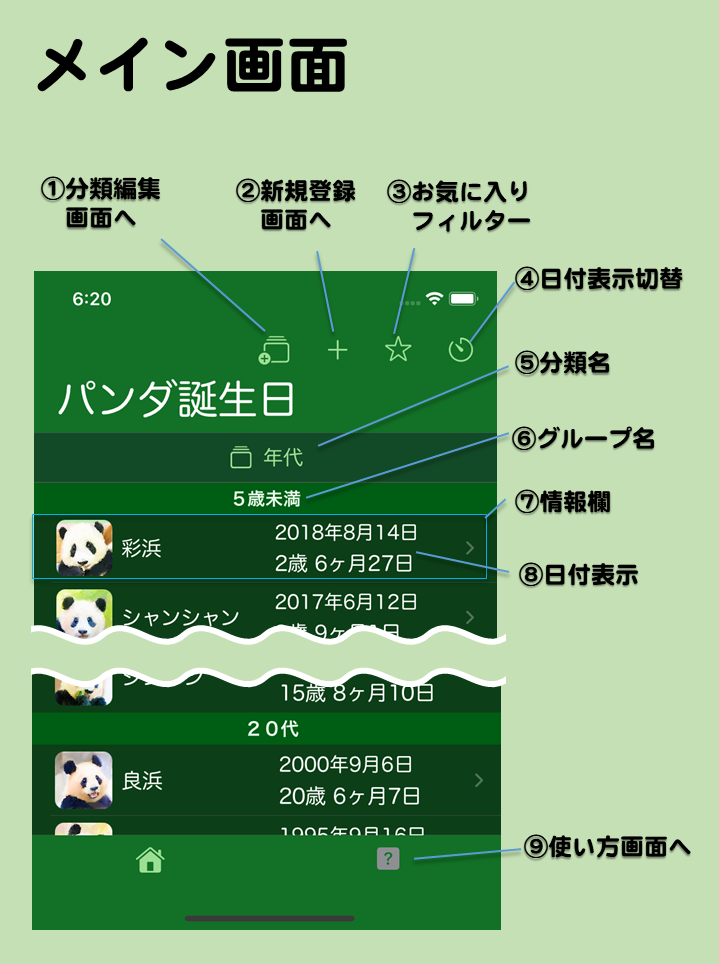

- メイン画面とは
- 起動直後に表示されるアプリの基本画面です。パンダ情報を一覧表示します。
- 画面の説明
- ①分類編集画面へ
- タップすると分類編集画面に移動します。表示したい分類を変更したり、分類の表示切り替え順序を変えたりできます。
- ②新規登録画面へ
- タップすると新規登録画面に移動します。自分で誕生日やイベントを登録できます。
- ③お気に入りフィルター
- タップするとお気に入りを設定した情報だけ表示するかどうかを切り替えます。★ならフィルターオン（お気に入りだけ表示）、☆ならフィルターオフ（全部の情報を表示）です。
各情報のお気に入りは詳細情報画面で設定できます。
- ④日付表示切替
- 情報欄の日付表示を年表示、年月日表示、日数表示に切り換えます。現在表示中の分類によって切り替わる日数表示が変わります。
- ⑤分類切替
- 現在表示している分類の種類を示します。タップすると次の分類に表示を切り替えします。長押しすると先頭の分類に表示を切り換えします。表示したい分類の選択・並び替えは分類編集画面で行えます。
- ⑥グループ名
- 現在の分類に応じた情報欄のグループ名です。グループ名の後にそのグループに所属する複数の情報欄がまとまって表示されます。
- ⑦情報欄
- パンダ情報もしくは利用者が登録した情報の抜粋表示です。アイコン、名前、日付を表示します。iPadなどの画面が広い機種では場所も表示します。情報欄をタップすると詳細情報画面に移動します。
- ⑧日付表示
- 情報毎の日付を表示します。分類が帰国期日ならば帰国期日とそれまでの日数を示し、誕生月なら誕生月日と次の誕生日までの日にち、人間換算年代なら誕生日と人間年齢に換算した年齢、それ以外なら誕生日と経過日数を示します。日付表示切り替えアイコンをタップする度に表示方法が変わります。
- ⑨使い方画面へ
- タップするとこの使い方画面を表示します。